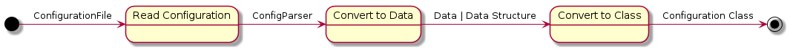

contents:
- Read Configuration <developer-configuration-read-configuration>
- Convert to Data <developer-configuration-convert-to-data>
- Convert to Class <developer-configuration-convert-to-class>
The first part of the requirement is to convert a file into a ‘configuration’. This is done in the main section by creating a SafeConfigParser from a configuration file-name. Since this is part of the standard library it won’t be documented.
SafeConfigParser([defaults, dict_type, ...]) |
An adapter class was created (the ConfigurationAdapter) in order to add two features to the SafeConfigParser:
- Optional options (and defaults)
- Data structures
ConfigurationAdapter |
The last part of the implementation is difficult to document completely. The idea is that each class that needs a configuration will create a class to map a <section>:<option> pair for each parameter it needs – with <section> meaning a section in the configuration file (e.g. [dut]) and the option meaning the left-hand side of a configuration line (e.g. hostname=192.168.20.24 would have hostname as the option and 192.168.20.24 as the assigned value).